Slow, mindful colouring for grown-ups
Fine, even grey lines, one picture per sheet.
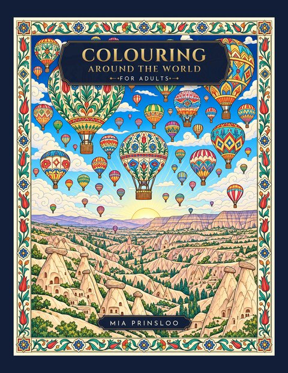
Colouring Around the World for Adults
From the carnival masks of Venice to the turquoise domes of Samarkand: 25 of the world's most remarkable places, drawn as intricate line art and framed by ornamental borders inspired by each place.
- 25 detailed scenes from five continents
- Single-sided pages, so markers never spoil the next picture
- A full-colour key at the back, with a short note about each place
- Large 8.5 x 11 in pages (21.6 x 27.9 cm)

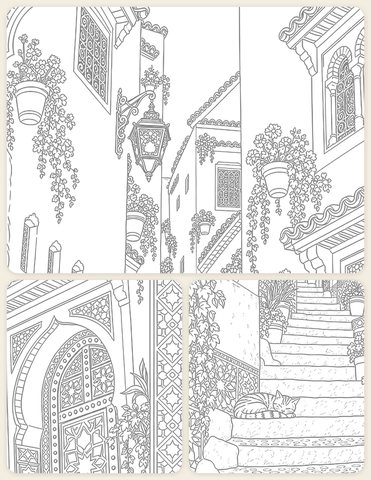

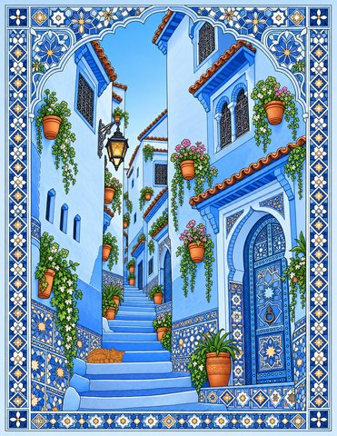

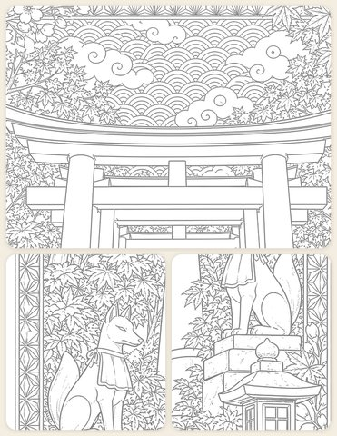

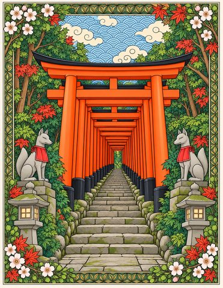

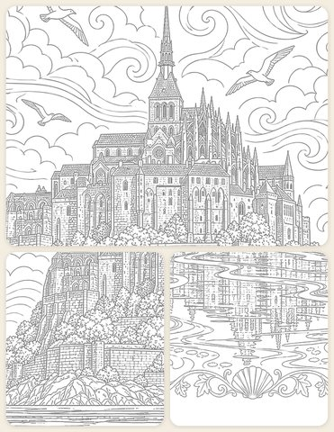

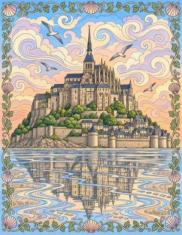

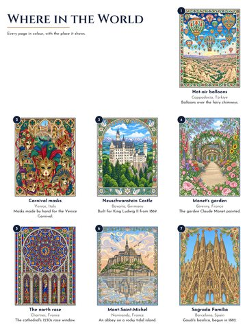

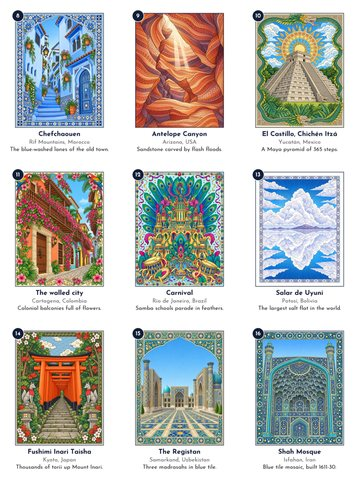

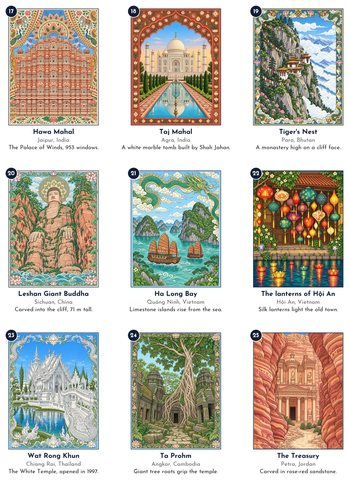
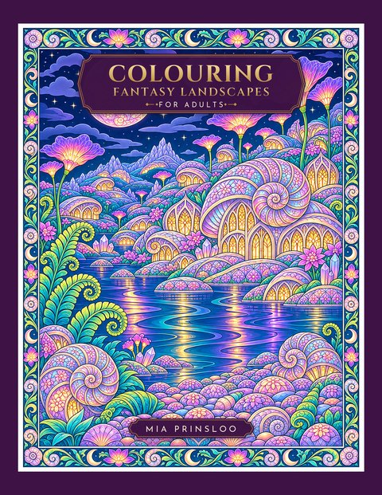
Colouring Fantasy Landscapes for Adults
Step into worlds that exist only in the imagination. From a crystal cathedral mirrored in a mountain lake to a glowing forest of mushroom houses: 31 imagined places where fantasy meets science fiction, each inside its own ornamental border.
- 31 detailed scenes: castles, floating islands, sky harbours, alien shores and temple cities
- Single-sided pages, so markers never spoil the next picture
- A full-colour key at the back, The Dreamer's Atlas, with a line about each world
- Large 8.5 x 11 in pages (21.6 x 27.9 cm)

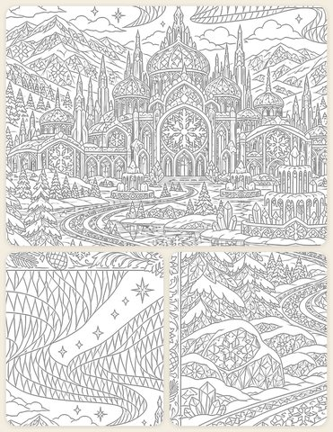

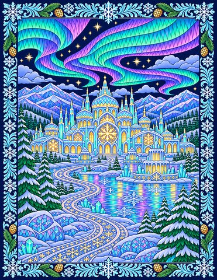

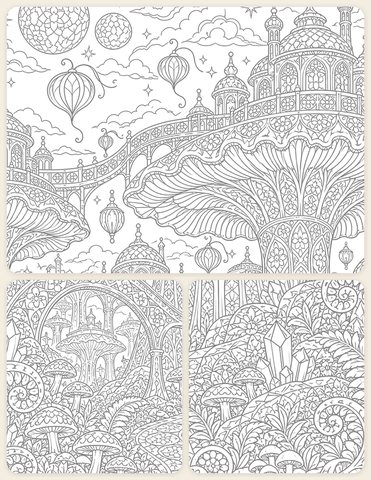

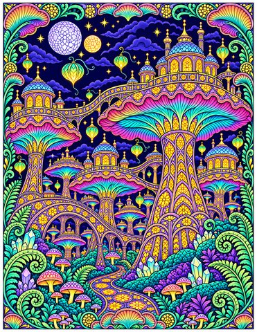

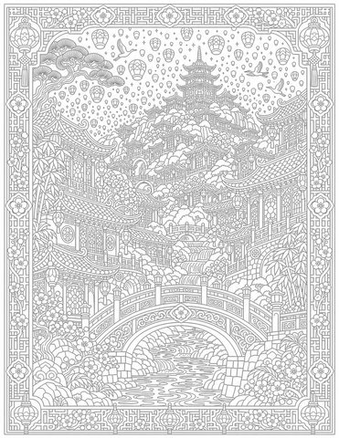

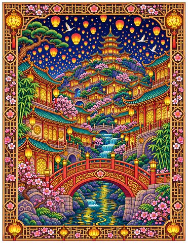

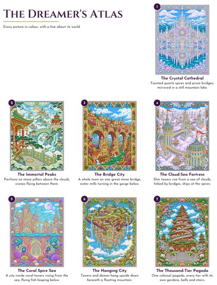

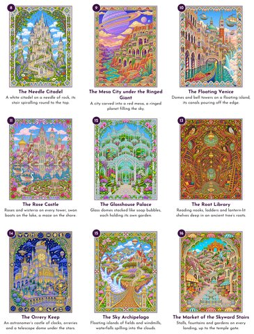

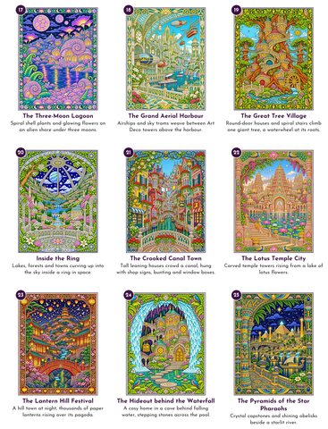

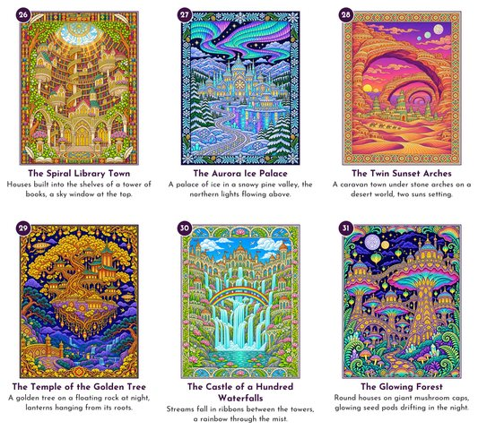
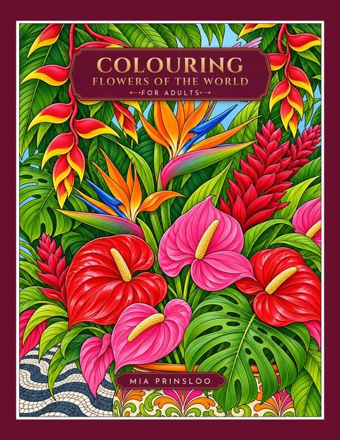
Colouring Flowers of the World for Adults
Gather the world's flowers, one quiet page at a time. From a Japanese ikebana to a Ukrainian flower crown with flowing ribbons: 27 flower arrangements and traditions from 24 places, with every petal, leaf and vein ready for slow, absorbing colouring.
- 27 detailed and diverse arrangements: bouquets, garlands, wreaths, vases, offerings and pattern pages
- A hidden 3D picture to finish
- Single-sided pages, so markers never spoil the next picture
- A full-colour key at the back, Where It Blooms, with a line about where each one comes from
- Large 8.5 x 11 in pages (21.6 x 27.9 cm)

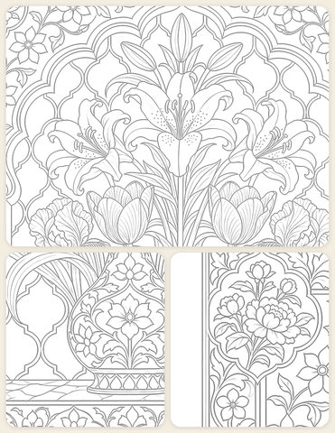

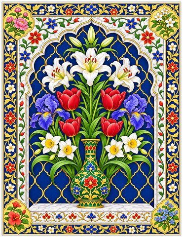

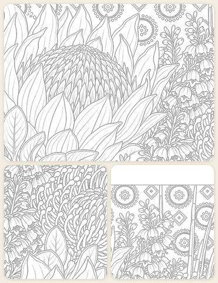

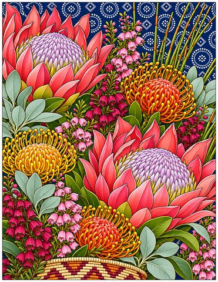

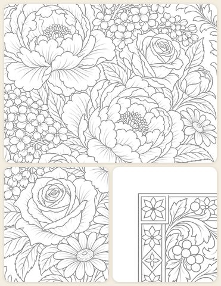


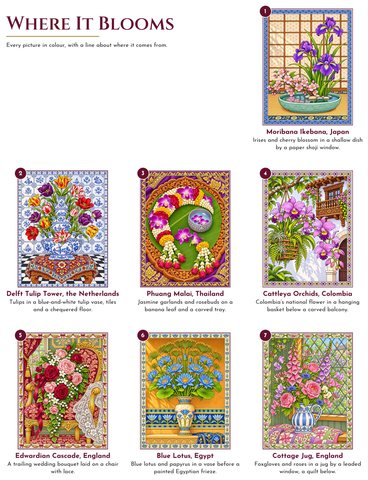

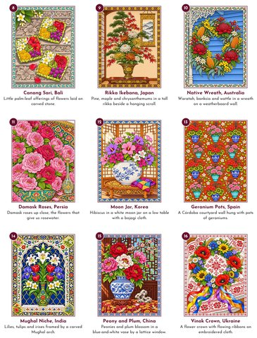

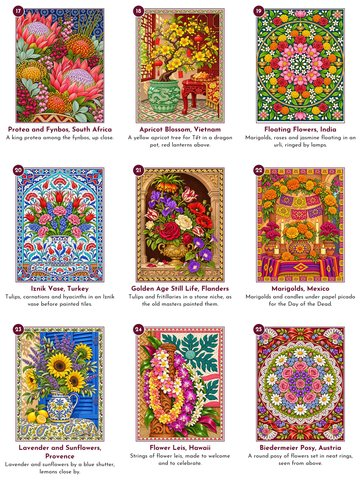

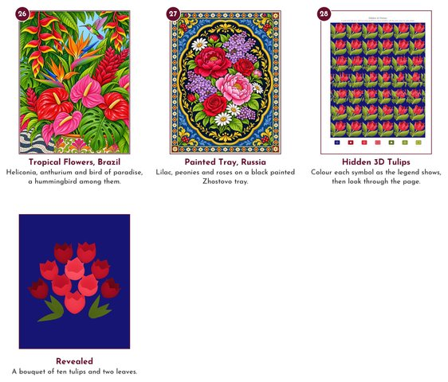
More colouring books are on the way.